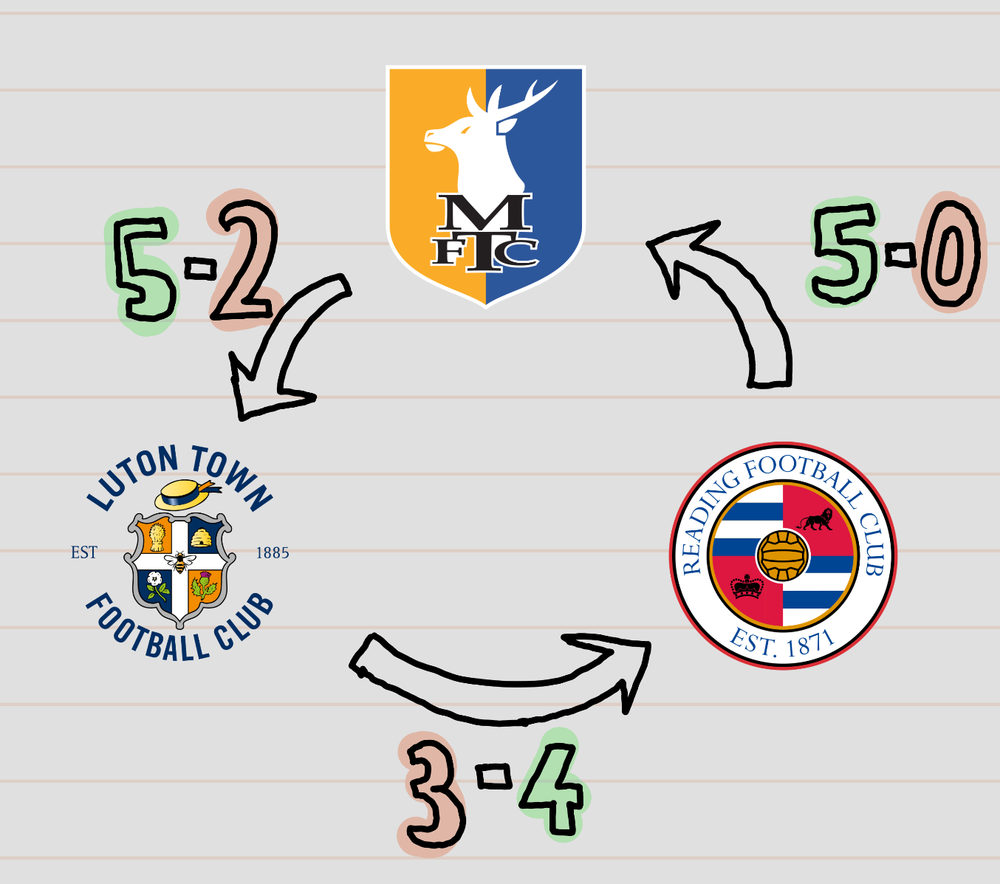

Last night, Reading’s thrashing of Mansfield sparked a beautiful recurrence of a common football league phenomenon. Just 4 games into the League One season, Reading, Mansfield and Luton have already created a ‘circle of victory’. Reading have beaten Mansfield, who beat Luton, who beat Reading. It’s all akin to rock-paper-scissors.
These circles put into practicality the cliche that ‘anyone can beat anyone’ in these leagues. Particularly eye-catching in this example are the scorelines of these victories. 2 sides conceded 5, and Luton came from 3-1 behind to beat Reading 4-3. The centre of this confusion then seems to be Mansfield. How did they beat Luton 5-2, having gone 5-0 up, but lose 5-0 to Reading; especially after Reading lost to Luton? In an attempt to uncover this, I’ll start from the chronological middle, Mansfield 5 - 2 Luton, which also feels somewhat like the centre of this cycle.

Mansfield 5 - 2 Luton: Preparedness Issues for Luton
Mansfield were brilliant at home to Luton, but there are some clear reasons why Luton were easier to carve open so frequently, even after a solid start to the season. Luton had made the 2nd round of the EFL Cup, hence played away at Chelsea on the Thursday night before this game on the Sunday. Luton put up a decent fight, only losing 2-0, and 6 players who started against Chelsea also played Mansfield 3 days later. In contrast, Mansfield rested a full week before the fixture. In my eyes, this is the strongest reason for Mansfield’s comfortable dispatch of Luton.
Additionally, Luton manager Jack Wilshere made some confusing tactical tweaks, which didn’t really work in hindsight. Apologies for the spoilers later in the article, but Kasey Palmer scored twice in Luton’s opening day victory at Reading, playing as clear number 10. However, after a relatively secure display against Chelsea, Palmer remained as more of a defensive midfielder against Mansfield. Going forward, Palmer looks at times the best attacker in the league, scoring 8 in 20 appearances last season, and outperforming his xG by 3.00. Wilshere stifled his attacking output by giving him more defensive responsibility against Mansfield, also contributing to a weak Luton midfield, as Palmer lost 6 duels, failing his defensive requirements.
Mansfield set up quite similarly to the side who’d narrowly lost to Peterborough, and narrowly beaten Doncaster, but Luton’s tiredness following defeat to Chelsea, combined with one or two poor tactical calls from Wilshere, turned the tide significantly for a generally solid League One side, against a very poor (on the day) Luton side. So why did Mansfield lose so heavily in their next game, away at Reading?
Reading 5 - 0 Mansfield: Clough Makes Similarly Poor Decisions
Following in Wilshere’s footsteps, Nigel Clough made some odd decisions in Mansfield’s set up here, certainly contributing towards their downfall. Whilst retaining a similar system, Mansfield made 6 changes going into this game, with many fans fearing Clough was overcomplicating the game plan. As well as this, Moriah-Welsh, who’d brilliantly scored 2 from the wing against Luton, was moved further in the field, struggling not for the first time to adapt to a more central position. Mansfield only had around 41% possession at home in victory against Luton, but tried to be more ball-dominative away at Reading, a pretty bizarre decision. In this defeat, they had nearly equal possession to Reading, and completed nearly 50 more passes than against Luton, at a greater accuracy, but creating much less.
However, some of Mansfield’s struggles could be attributed to Reading’s efficient set-up in this game. When playing Luton, the side fell victim to sitting back. However, this strategy was much more efficient against a Mansfield side who clearly struggled to create chances when the onus was on them. Whether this should act to support Leam Richardson’s Reading tactics is a question for Reading fans only, but Mansfield certainly must find other ways to play.
Perhaps then, the stark differences and similarities these clubs possess in style of play can explain to some extent why each of the sides acts as a bogey team to another. Finally now, I can examine why Reading’s Rock is beaten by Luton’s Paper, and the impact one player in particular has had on this cycle.
Reading 3 - 4 Luton: Jack Marriott Shields Reading from Only Some Inevitable Humiliation
The final game of this analysis, but the first game of the season, Reading’s home defeat to Luton acts as the glue between the previous two results; it can also be explained by them. Leam Richardson’s tactics against Luton were almost bound to fail, even if they excelled against Mansfield.
As earlier stated, Wilshere’s Luton side struggled against Mansfield as he didn’t allow their best attacking players to flourish going forward. Mansfield struggled against Reading’s passive defense because they couldn’t cope with having time on the ball. Players like Kasey Palmer though, playing Number 10 against Reading, can cope. Luton’s late equaliser had such a strong air of inevitability behind it, as Reading have allowed this to happen time and time again against teams who enjoy going forward. Luton had 59% possession, and created 3 big chances in the 2nd half alone. Unless Reading changes massively, they will always struggle against teams with significant attacking talent, which could really harm their promotion chances this season. The only reason why Reading weren’t cast away earlier was Jack Marriot’s stunning first half hat-trick. The striker is comfortably the best goal-scorer in League One at the moment, and scored 3 from 1.01 xG. In fact, I’d argue his influence has been very strong in making this trio of results quite so eye-catching.
Conclusion: A Strong Explanation, aided by Marriot
An easy conclusion to jump to for these sorts of early-season phenomena is ‘don’t read anything into results yet’. I think we can always read a lot from results, and these 3 tell us even more than the average game. Firstly, it is important to view these games without the ‘Jack Marriott Factor’. Without the marksman, who has scored a ridiculously impressive 5 goals from 9 shots this season, Luton’s victory at Reading would likely have been much more comfortable, and Reading’s win against Mansfield less comfortable. I would make a strong case that Luton are the strongest outfit of the three, playing a much more productive attacking style of football than the other two, when not restrained by their manager. Their embarrassing loss to Mansfield was highly impacted by Wilshere’s poor decision-making, as well as clear tiredness after their EFL Cup exit. Both Reading and Mansfield play similar football, but Richardson came out on top in their managerial battle last night. The clearest difference between the two sides is of course Jack Marriott. Reading should finish above Mansfield this season, if he can keep fit for even half of their fixtures to come.